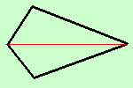
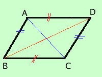

|
ogni diagonale divide un parallelogramma in due triangoli congruenti e viceversa Se un quadrilatero e' diviso da ogni diagonale in due triangoli congruenti allora il quadrilatero e' un parallelogramma Dimostriamo prima il teorema diretto e poi il teorema inverso teorema diretto
Dimostrazione (uguale alla prima) congiungo i punti B e D ed ottengo i due triangoli ABD e BDC; essi hanno: 
 teorema inverso da notare che nel teorema specifico "ogni" diagonale perche' altrimenti, nel teorema inverso, potrebbe trattarsi di un "romboide" (tipo aquilone)
Dimostrazione I triangoli ABD e BCD sono congruenti per ipotesi e quindi hanno congruenti tutti gli elementi  Anche i triangoli ABC e ACD sono congruenti per ipotesi e quindi hanno congruenti tutti gli elementi in particolare AB=CD ed AD=BC ma questi essendo lati opposti congruenti di un quadrilatero ne segue che il quadrilatero e' un parallelogramma (come abbiamo gia' dimostrato) Avendo dimostrato sia il teorema diretto che quello inverso i due fatti, parallelogramma e lati opposti congruenti, saranno equivalenti |